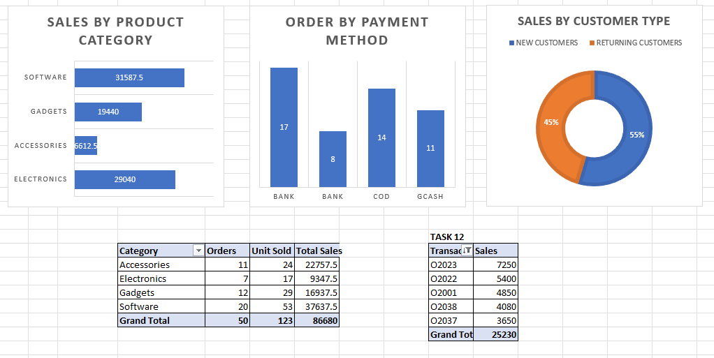

- / WEB DESIGN (UI/UX)
- / ARCHITECTURE
- / FULLSTACK DEV.
I D E A S
I N T O
I N T E R F A C E S
B U I L D
D E S I G N
S O L V E
R E P E A T
ABOUT ME
Get to Know Me
I am a BSIT graduate specializing in network infrastructure. My core technical skills include networking, TCP/IP configurations, and managing routers, switches, and firewalls. I am passionate about building reliable, scalable systems and am actively pursuing a career as a Network Engineer. I thrive on solving complex technical challenges and continuous learning.
MY SKILLS
What I Do Best
Network Engineering
TCP/IP, Router & Switch Configuration, Subnetting.
Cybersecurity
Firewall Management, Vulnerability awareness (SQLi prevention).
IT Troubleshooting
Hardware/software diagnostics, DHCP/DNS resolution.
Development & Tools
Git, GitHub, SQL, Excel/Google Sheets for data analysis.
PORTFOLIO
Featured Projects

AI-Assisted Computer Repair Shop Management System
A full-stack system tracking repair tickets with built-in CRUD operations, database management, validation, and AI-assisted troubleshooting logs.

Online Store Sales & Performance Analysis
A comprehensive case study extracting insights from e-commerce data. Analyzed customer loyalty, discount efficiency, and top-performing products to formulate evidence-based business recommendations.
RESUME
Education & Experience
Education
BS Information Technology
Datamex College of Saint Adeline
Consistent Dean's Lister (1.20 - 1.80 GWA). Coursework includes Database Systems (SQL), Information Management, and Computer Systems Maintenance. Hold a National Certificate II (NC II) in Computer Systems Servicing.
Experience
Technical Project Lead
Datamex College of Saint Adeline
Developed and deployed an automated student enrollment system using Google Forms and AutoCrat, significantly streamlining administrative workflows and data entry.
Official Event Photographer
Datamex College of Saint Adeline
Managed official photography for school functions, ensuring high-quality visual documentation and organizing digital assets for publications.
Student Assistant
Datamex College of Saint Adeline
Managed administrative records, performed routine PC hardware maintenance, and designed promotional visual assets for school events and pageants.
Career Development Plan
Target: Administrative Assistant
Career Goal
Secure a remote or flexible Administrative Assistant role to leverage my technical IT skills and process automation experience to improve office efficiency and workflow management.
Cyber Awareness
Cyber Threats in 2026 and How to Stay Safe
Web Dev 101
System Integration & Connecting Apps via API
QA 101
Software Quality, Bug Tracking and Manual Testing
Arduino 101
Coding Meets Hardware
Pro Skills
21st Century Soft Skills for Tech Pros
CASE STUDIES
Problem-Solving & Security
IT Troubleshooting Cases Documented
- IP Address Conflict & DHCP Failure: Diagnostics using ipconfig and adapter resets.
- DNS Resolution Failure: Identifying and resolving hostname resolution issues.
- Slow Network Speed & Packet Loss: Isolating bandwidth bottlenecks and packet drops.
- Physical Switch / Port Failure: Layer 1/2 troubleshooting and hardware replacement.
- Default Gateway Unreachable: Routing and connectivity resolution.
Cybersecurity Case Study
Topic: SQL Injection (SQLi) Vulnerability
Focus: Anatomy of the attack, data breach risks, and defensive programming using Parameterized Queries and input validation.
EMPLOYABILITY
Professional Readiness Evidence
Interviews & Defense
Evidence of my professional communication and technical articulation skills.
- Mock Job Interview: View Recording
- Technical Interview: View Recording
- Project Defense: View Presentation
AI Literacy Evidence
Documented logs of how I utilized AI tools responsibly throughout my capstone development.
VERSION CONTROL
My GitHub Repository
@greychase612-stack
Explore my source code, version control history, and technical documentation. All my major projects and portfolio source files are hosted here.
VISIT MY GITHUBMY JOURNEY
Final Reflection
Looking Back at My BSIT Journey
Before entering the BSIT program, my knowledge of Information Technology was limited to basic computer operations and a general fascination with how systems connected. Today, I am proud to have transformed that curiosity into a robust foundation in network infrastructure, troubleshooting, and web development. The most important things I learned extend beyond technical syntax—I learned how to think analytically, how to securely manage data, and how to rapidly adapt to new technologies.
Projects, Challenges, and Growth
The project that taught me the most was the AI-Assisted Computer Repair Shop Management System. It pushed me out of my comfort zone by forcing me to integrate front-end user interfaces with real-time cloud databases (Firebase) and AI diagnostic logic. The most significant technical challenge I faced was ensuring seamless, asynchronous communication between the client and the cloud while maintaining strict UI responsiveness. Overcoming these hurdles significantly sharpened my problem-solving skills and deepened my understanding of system architecture.
Moving Forward as an IT Professional
Throughout this program, my IT skills have evolved from theoretical concepts into practical, deployable capabilities. While I have built a strong foundation, I recognize the need to continuously improve my proficiency in advanced cloud deployments and cybersecurity automation. My ultimate goal is to become a specialized Network Engineer who builds and secures scalable infrastructures. I am now ready to begin my career in IT because I possess not only the technical skills to build systems, but the resilience and analytical mindset required to solve complex problems in the real world.
GET IN TOUCH
Contact Me
Have a project in mind or want to discuss opportunities? I'd love to hear from you. Feel free to reach out through any of the channels below.